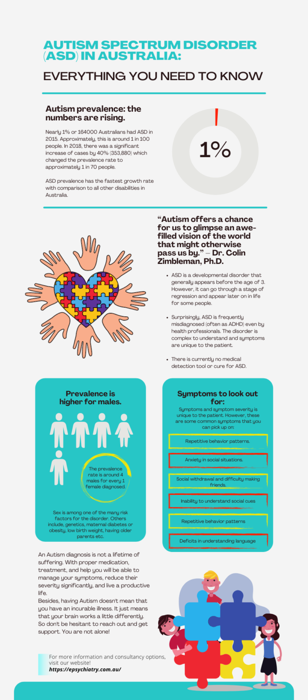

Autism in adults? Yes! Well, technically you can’t develop Autism as an adult. In fact, the DSM-5 or the Diagnostic and Statistical Manual of Mental Disorders created by the American Psychiatric Association explains that the onset of the disorder is in the early developmental stages. Most children show symptoms of autism by 12-18 months of age or earlier. Nonetheless, the disorder can be hidden away inside you. Let us explain. The DSM-5 further indicates that symptoms of autism may take time to fully manifest. Consequently, adults starting to show autistic symptoms or being tested and diagnosed with autism is not unlikely at all.
If you are an adult who suddenly started to show symptoms of autism or know someone who did, it’s not because of a sudden development in the disorder. It’s because the condition was already there but the symptoms were subtle. Alternatively, you may even have been misdiagnosed when you were a child. Yes, that is possible. For instance, have been a lot of cases where autism was misdiagnosed as ADHD (Attention Deficit Hyperactivity Disorder) because of similarities in symptoms.
Now to the central point of this article: getting tested for autism as an adult. Testing autism in adults is far more complicated than children’s tests. Most medical professionals who do autism diagnoses are used to seeing children and are not really trained to diagnose adults. Furthermore, we still don’t know much about how adult autism differs from the children’s variant. Keep on reading to find out how testing is done and how a diagnosis is made.
Prevalence
With respect to the Australian Bureau of Statistics, there were 164000 Australians living with Autism in 2015 which is a 42.1% increase from the 2012 numbers. The prevalence of autism in men was higher than that of women, with every 4 out of 5 from the total number of cases being males. While no statistics on the number of adults with autism have been indicated, it is said that 3/4 of the total number were young. Hence, we could assume that 41000 of these cases were adults. These numbers would have (obviously) increased by now.
What is autism?
Autism Spectrum Disorder (ASD) or simply, autism is a complex developmental condition that is characterized by changes in social interactions, speech, and nonverbal behaviour, and restricted or repetitive behaviour. The complex part of autism comes from its many subtypes. Depending on these symptoms and severity are different in each person. In fact, when it comes to children, no two children show symptoms the same way. For instance, a child diagnosed with autism may have difficulty learning and show signs of lower intelligence whereas another would show high intelligence but have trouble communicating and behaving appropriately in social settings. Consequently, this is one of the reasons why the APA (American Psychological Disorder) modified the diagnostic name of autism in the DSM-5 to “Autism Spectrum Disorder” instead of the previously used sub diagnoses such as Autistic Disorder and Asperger Syndrome.
As mentioned early, the disorder begins really early in life and eventually starts disrupting normal social functioning in social settings such as schools and workplaces. Most children with autism show symptoms in their first year. However, a small percentage of children show normal development in the first year and then go through a period of regression between 18 to 24 months where they develop symptoms.
How does family therapy help?
Family therapy is specifically designed to address things that affect the health and function of a family. It views individual problems in a larger context. It is based on the theory that individual problems can not be solved without understanding where it is coming from. So, the dynamics of the family setting are analyzed. This is because the function of the family influences the problems. Unresolved issues may cripple your family members day to day lives. You may notice them visibly losing interest, being backward, or being very lazy.
Most of what is used in family therapy are adopted using cognitive therapy, interpersonal therapy, and behaviour therapy. Just like each of these, the problem and solution vary on the individual. When you feel like the issues in your family are too big for you to handle you can trust family therapists to help you out.
What can family therapy help you with?
Are you experiencing the below issues within your household? In that case, family therapy sessions are recommended to anyone finding it hard to get things under control on their own.
- Nonstop fighting between family members.
- One or more family members addiction to substance use.
- Experiencing infidelity
- Issues regarding the extended family members
- Severe behavioural problems in the children.
- A family member suffering from a mental illness
- Homophobic family members living with gay/lesbian or bisexual family members
- Complains from schools
- A tragic or traumatic situation that has impacted the family. For example, the death of a family member.
- Financial issues
- Homewrecker issues
These are not the only causes that may push you to get the help of family therapy. There is no shame in trying to fix your home. It is always better to act before it is too late.
Techniques used in family therapy
It is up to your therapist to decide the most useful type of family therapy to help your family. Of course, it is important that you take this advice and guidance from a therapist you feel comfortable with. Here is a listing of some of the most used methods during family therapy.
Structural method
This technique focuses on strengthening the internal family bonds. The set adjustments leave parents in control. I also press on the boundaries when it comes to both parents and children. The therapist is likely to take an intimate initiative to observe the process of therapy. This theory believes that family issues are caused because of the faulty structure of the family. As a common fix, parents are requested to be more assertive.
Bowenian method
This technique is focusing on a single family member. In other words, this individual is likely to seek therapy alone. They may want to vent to a third party on what is happening and will seek help alone. However, he or she may interact with a single family member at a time to fix things. The individual will receive instructions on how to be less emotionally reactive in the family.
Systemic family therapy
This therapy method focuses on identifying hidden languages behind a member’s behaviour. However, the therapist takes a distant stand, evaluating as the family members dive into their issues. Altering one person’s actions can affect the entire family. The therapist will direct circular questions to be out the different perspectives of the family members. In return, they can shift their actions.
Narrative family therapy
This therapy method encourages individuals to navigate through life using their own skillset. This helps individuals help themselves during problems they face in their lives. Especially the insignificant ones. The therapist will help the narrator by guiding him/her through issues and helping him/her clarify things.
Communication family therapy
Communication concerns are an important need in therapy. Particularly when it comes to relationship treatment. When the primary difficulty between the couple is a lack of communication. Differences in cultural origins and/or personal experiences might lead to communication problems between people. In other words, trauma, secrecy, and mental health concerns are some of the other factors that might lead to this problem. However, there are various solutions for dealing with communication challenges. They can be for the benefit of an individual or two people in a close relationship. However, a qualified therapist can help a person in deciding the most effective ways for increasing communication. A few examples are active listening, opening lines of communication, and mediated communication.
Transgenerational family therapy
This method allows therapists to look at relations between family members from different generations. In other words, the observations and analysis of interactions by the family therapist aid them in grasping the core concerns inside the family group. The therapist may pick up on future challenges or stressful situations in addition to existing issues. This therapy concept frequently combined with different therapies.
What are the advantages of family therapy?
On a personal level, each person deals with challenges in their own unique way. However, that is with differing levels of difficulty. Outside help in the form of therapy or counselling can be quite beneficial in addressing these concerns. Similarly, there are situations when the issues are not caused by an individual. In other words, they are caused by or chaotic familial relationships.
Familial intervention is the best way to address these types of issues. It is a strategy of enhancing communications and relationships among the family members involved.
Every member of the family is involved in family therapy. That is to discover the source of discomfort and eliminate it in the best way possible. Similarly, parents, siblings, maternal or paternal cousins, uncles, aunts, and even grandparents may be involved.
Family therapy is a group counselling method that benefits the entire family. The following are some of the benefits of family counselling:
- Identifying family members’ sources of conflict and anxiety
- Family members must re-establish communication.
- More effective expression of painful feelings
- Understanding and respecting other family members’ points of view and opinions
- Allowing family members to value the wants and needs of one another
- assisting people with the stresses of difficult situations
- Developing a stronger sense of empathy for one another
The goal of family therapy is to bring the family back into harmony. However, it is critical that family members enter the process with an open mind and a willingness to address the issues that are affecting the family. That is necessary for the procedure to be effective. The family can then completely benefit from everything that family therapy has to offer.
Is your family eligible for therapy?
To avoid tense interactions during a family therapy session, individual counselling for one or more family members may be recommended. Some families are not thought to be good candidates for family therapy. They are as follows:
- Those with cultural or religious values that oppose or distrust counselling
- Families in which one or both parents are psychotic
- The families whose members are unable or unwilling to meet for treatment on a regular basis
- Families with members who are unable to attend therapy sessions due to physical illness or other restrictions
- Members of families with inflexible personality structures
Potential risks of family therapy
The most significant risk in family therapy is the ability to upset already bad relationships. Family therapy brings out a lot of hidden feelings. However, not everyone can handle all that. Similarly, intensive family therapy can be tough for family members who have been diagnosed with mental illnesses. For children who may not fully comprehend the relationships that occur during family therapy, family therapy can be very tough and stressful. Individual treatment for children and adolescents, either by the same therapist (if suitable) or a therapist who is aware of the family treatment, might be beneficial.
How can you find a family therapist?
Is it time to seek professional help for your family? Here is how you can find the best therapist to help you out.
Ask a doctor
Patients can often be referred to a qualified family therapy service by their family doctors. Thus, family doctors typically provide insight into which family therapists in the area might offer the best treatment for a family. They have worked with other families with similar challenges. Thus, consider seeking advice from your doctor.
Ask a religious leader
If you belong to a religious community, you can seek advice from your religious head. Families with strong religious background are more likely to choose a counsellor who shares their beliefs.
Refer online information or personal recommendations
People who have benefited from a therapist’s services are one of the best sources for referrals. Inquire about a family member’s experience with their therapist, if you know someone who has gone to counselling. After that, learn about the therapist’s communication style. Also of the precise actions that he or she advised your buddy to do.
On top of that, you have the right to inquire about your therapist’s qualifications before you leave the responsibility of your family on their hands. Here are a few questions you can ask your therapists.
- What university did you attend to earn your professional degrees?
- Who was in charge of your early clinical years?
- How long have you been working in this field?
- What is your experience treating a condition like mine?
- Is your bachelor’s degree in family therapy or a comparable field?
- What are your thoughts on family counselling from a philosophical standpoint? Within family therapy, there are various schools of thought, and you should find out how the therapist you’re considering views families and what tactics they employ.